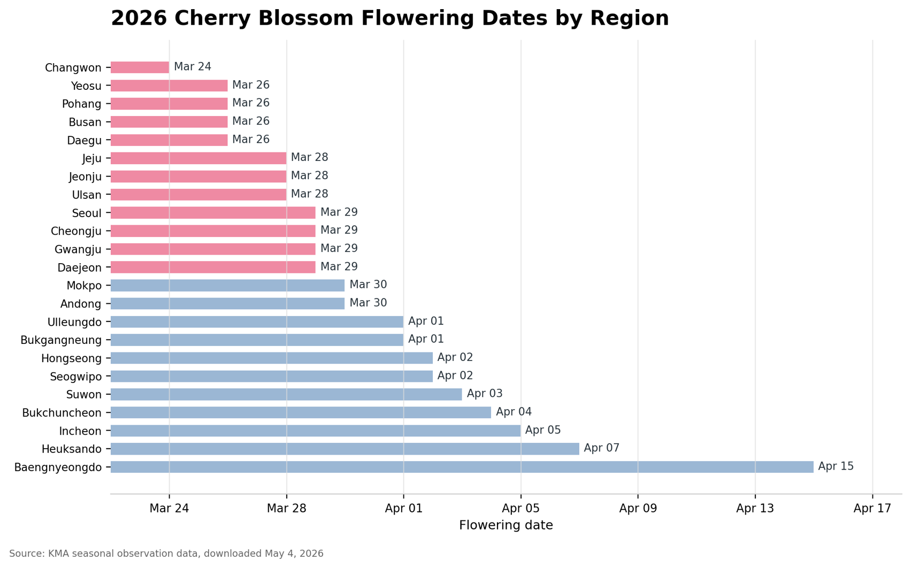
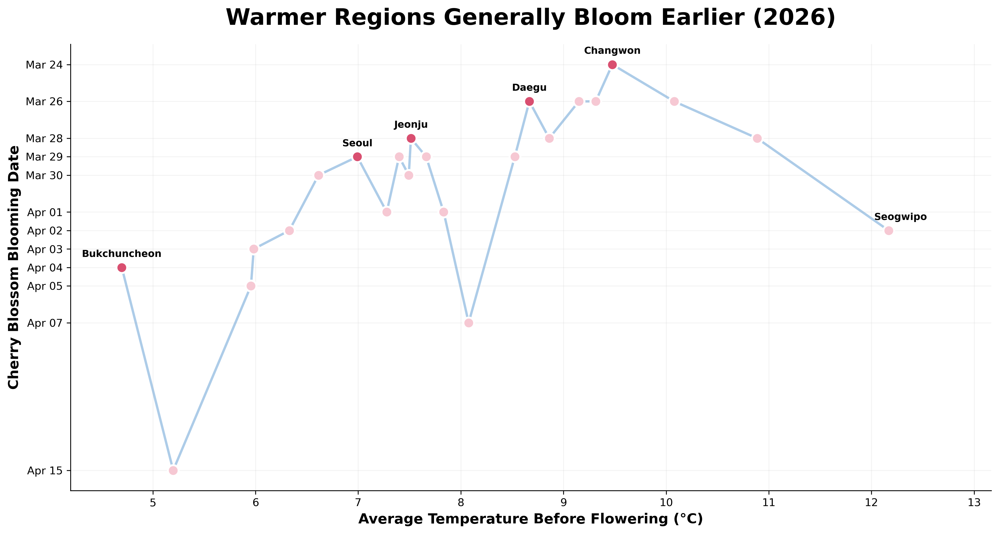
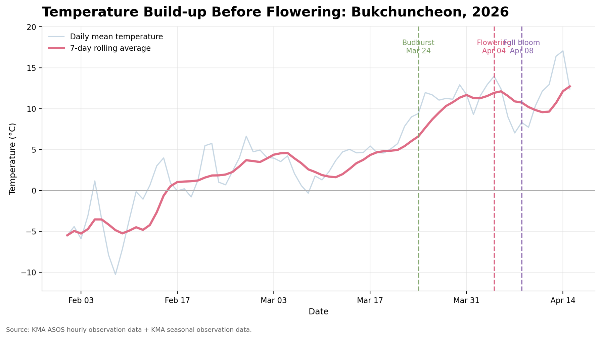
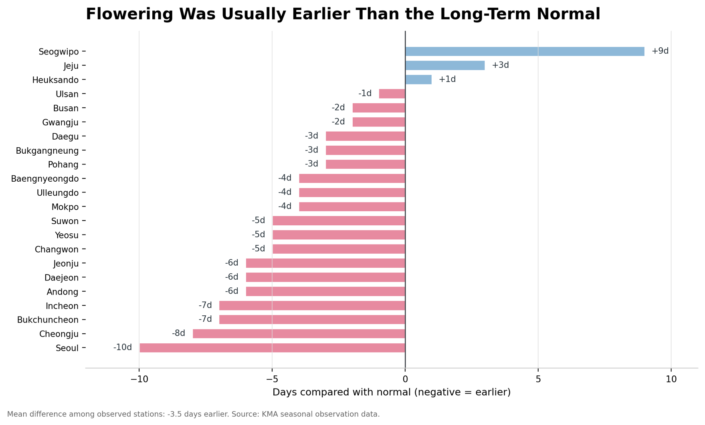

regions compared across the 2026 bloom window
South Korea · Spring 2026 · KMA observations
Spring Arrives in Motion
Cherry blossoms do more than decorate the season. Changwon opened the 2026 bloom wave first; Seoul's signal was different: it bloomed the most days earlier than its normal date.

Mar 24
earliest region
Apr 15
latest bloom
Project Narrative
A seasonal event becomes a climate instrument.
This project uses Korea Meteorological Administration seasonal observation and ASOS weather data to examine how cherry blossom flowering dates varied by region in 2026, how those dates compared with long-term normal dates, and how temperature build-up before flowering helps explain the timing of spring.
between Changwon's first bloom and Baengnyeongdo's latest bloom
Seoul's 2026 bloom compared with its normal date, the largest early shift
historical trend and projection window in the long-term view
Feedback response
Charts are enlarged, the regional view now includes a map-style heat layer, and the key findings are separated into short takeaways instead of long paragraphs.
Data Diagnostics
Two fixes that make the story easier to read.
The original charts are useful evidence, but the web version should add analysis that is faster to understand. These two views separate calendar timing from normal-year change, so Seoul is no longer confused with the earliest bloom.
Bloom dates by count
Most regions: Mar 26 and Mar 29
Instead of reading 23 separate bars, this view shows when blooms clustered. The wave begins in Changwon, then many regions join on March 26 and March 29.
Change from normal
19 of 22 listed regions were early
This fixes the main interpretation issue: Seoul is not the first bloom, but it is the strongest earlier-than-normal signal at 10 days early.
01 · Regional Bloom Wave
The bloom moved north and outward over three weeks.
In 2026, Changwon flowered first on March 24. Seoul did not flower first; it stands out because it was 10 days earlier than its normal flowering date. Select a region to inspect both signals separately.
Geographic station map
pink = March bloom, blue = April bloom
Mar 24-Mar 30
Apr 01-Apr 15
selected region
02 · Temperature Before Flowering
Temperature helps, but it does not explain bloom timing alone.
ASOS stands for Automated Synoptic Observing System: Korea Meteorological Administration weather stations that record observations such as temperature, precipitation, sunshine, and radiation at regular intervals. Figure 3 uses those station-level temperatures to compare pre-flowering warmth with the observed 2026 flowering date.
- The x-axis shows average temperature before flowering.
- The y-axis shows the observed 2026 flowering date for each region.
- The key message is that warmth supports bloom timing, but geography and local conditions still create exceptions.
Figure 3
temperature and flowering date

This team figure places average pre-flowering temperature on the x-axis and the 2026 flowering date on the y-axis to show the broad relationship between warmth and bloom timing.
Figure 3 redesign
independent regions, no connecting line
The redesign below keeps each station independent, making the temperature comparison easier to read without relying on a connecting line between unrelated regions.
Supplement view
change from normal
This additional support graph separates calendar order from normal-year change, so readers can see that Seoul was not the earliest bloom but was the strongest earlier-than-normal signal.
Phenology Lens
Reading the bloom as three visible stages.
Figure 4 marks three biological checkpoints in the cherry blossom cycle. Bukchuncheon is used as the detailed example because it represents a northern inland station with visible year-to-year variability, while Changwon and Baengnyeongdo provide early and late reference points for comparison.
The first visible opening of buds after accumulated warmth.
The date used for regional comparison, when blossoms first become visible.
The peak stage after several additional warm days.
01
Budburst
Mar 24 · the buds open and the tree starts visibly responding to accumulated warmth.
02
Flowering
Apr 04 · blossoms become visible, matching the key event used in the regional comparison.
03
Full Bloom
Apr 08 · the canopy reaches peak bloom after several more warm days.

03 · Long-Term Signal
Korea's average flowering date is drifting earlier.
Historical data varies year to year, yet the national trend moves steadily toward earlier spring flowering. The projection window follows the final Figure 5 and 6 method: a simple linear continuation with a widening uncertainty range.

Figure 5 · Long-term trend across Korea
Although flowering dates fluctuate from year to year, the historical linear trend indicates that cherry blossoms have generally bloomed earlier over time. The projected continuation suggests this shift may persist through 2035.

Figure 6 · Local variability in Bukchuncheon
Bukchuncheon shows substantial year-to-year variation compared with the national view. The trend points earlier, but the observed swings show how annual weather and regional conditions still shape local flowering.
Projection note. The projections in Figures 5 and 6 rely on simple linear trends and should be interpreted with caution. Actual flowering dates may deviate from these scenarios because of annual weather fluctuations, local environmental conditions, and other unmodeled factors.
Chart Evidence
Original figures, redesigned as an evidence wall.
The project keeps the original analytical charts available for inspection while the surrounding website turns them into a more guided visual story.

Figure 3 redesign
independent regions, no connecting line
Figure 3 support
change from normal
Conclusion
Cherry blossoms are a calendar written by climate.
The 2026 bloom pattern shows clear regional differences, mostly earlier-than-normal flowering, and a visible relationship between accumulated warmth and bloom timing. Over decades, the national flowering date trends earlier, making cherry blossoms both a cultural marker of spring and a sensitive visual indicator of environmental change.